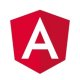
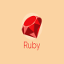

This blog covers some of the crucial and most important information in the field of Web Development. Here, you will get a basic idea of what Web Development is and how it works. Once you understand the meaning of Web Development, you will come across various platforms, tools, technologies, Resources and languages used in this field. Later, you will read about the process of of Web Development.Web development is the building and maintenance of websites; It’s the work that happens behind the scenes to make a website look great, work fast and perform well with a seamless user experience.Web developers, uses variety of languages to do this. The languages they use depends on the types of tasks they are performing and the platforms on which they are working.Web development skills are in high demand worldwide and well paid too – making development a great career option. It is one of the easiest accessible higher paid fields as you do not need a traditional university degree to become qualified.
The field of web development is generally broken down into front-end (client-side) and back-end (the server side). Let’s see in detail.
A Front-end Developer takes an idea from the drawing board and turn it into reality.What you see, such as the visual aspect of the website, the drop down menus and the text, are all brought together by the front-end developer, who writes a series of programmes to bind and structure the elements, make them look good and add interactivity. These programmes runs through a browser.
A Back-end Development engineers what is going on behind the scenes. This is where the data is stored and without this data, there would be no frontend. The backend of the web consists of the server that hosts the website, an application for running it and a database to contain the data.The backend dev uses computer programmes to ensure that the server, the application and the database run smoothly together. This type of dev need to analyse the needs of the company and provide efficient programming solutions.
These are the Some of Front-End Frame Works and Libraries.
Bootstrap is a free front-end framework for faster and easier web development Bootstrap includes HTML and CSS based design templates for typography, forms, buttons, tables, navigation, modals, image carousels and many other, as well as optional JavaScript plugins
AngularJS is a structural framework for dynamic web apps. It lets you use HTML as your template language and lets you extend HTML's syntax to express your application's components clearly and succinctly.

jQuery is a fast, small, and feature-rich JavaScript library. It makes things like HTML document traversal and manipulation, event handling, animation, and Ajax much simpler with an easy-to-use API that works across a multitude of browsers.
React makes it painless to create interactive UIs. Design simple views for each state in your application and React will efficiently update and render just the right components when your data changes.
Foundation is a family of responsive front-end frameworks that make it easy to design beautiful responsive websites, apps and emails that look amazing on any device. Foundation is semantic, readable, flexible, and completely customizable. We’re constantly adding new resources and code snippets, including these handy HTML templates to help get you started!
Theses are the Some of the Best Back-End Languages and Frameworks
CppCMS is a Free High Performance Web Development Framework (not a CMS) aimed at Rapid Web Application Development. It differs from most other web development frameworks.
A Java web application is a collection of dynamic resources such as Servlets, JavaServer Pages, Java classes and jars and static resources (HTML pages and pictures). A Java web application can be deployed as a WAR (Web ARchive) file.
Python can be used to build server-side web applications. While a web framework is not required to build web apps, it's rare that developers would not use existing open source libraries to speed up their progress in getting their application working.
Node.js is designed to build scalable network applications.It is a platform built on Chrome's JavaScript runtime for easily building fast and scalable network applications.
Ruby is an interpreted, high-level, general-purpose programming language. Ruby is dynamically typed and uses garbage collection and just-in-time compilation. It supports multiple programming paradigms, including procedural, object-oriented, and functional programming.
These are some of the Tools Used for web development.
GitHub is one of the world’s largest community of developers. It’s an intricate platform that fosters collaboration and communication between developers. GitHub has a number of useful features that enable development teams to work together on the same project.

Visual Studio Code combines the simplicity of a source code editor with powerful developer tooling, like IntelliSense code completion and debugging.
Sublime Text editor is a sophisticated text editor which is widely used among developers. Sublime Text makes you comfortable to use it in your software development projects.
TypeScript is an open-source language which builds on JavaScript, one of the world’s most used tools, by adding static type definitions.Types provide a way to describe the shape of an object and allowing TypeScript to validate that your code is working correctly.
Sketch is a vector graphics editor for macOS. It is primarily used for user interface and user experience design of websites and mobile apps. It does not include print design features. Sketch has more recently added features for prototyping and collaboration.
CodePen is a social development environment for front-end designers and developers. it allows you to write code in the browser, and see the results of it as you build. A useful and liberating online code editor for developers.
“Learning Full Stack Development is a lot more challenging than it used to be, While Responsive web design adds more layers of complexity to design and develop websites.”
Leave a Reply